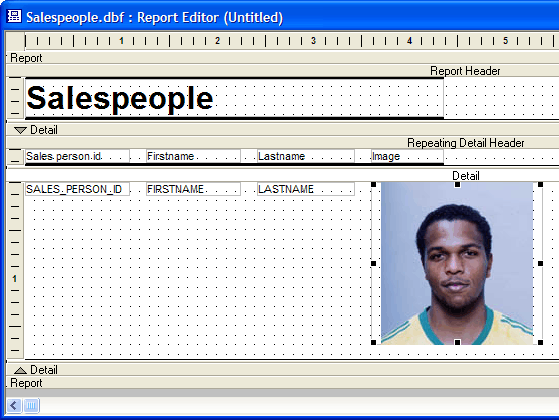
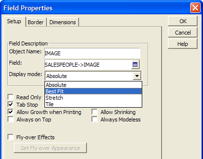
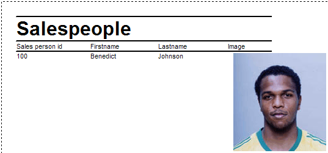

Printing Images
Syntax
The default Display Mode for image files on reports is "Absolute". This mode prints one picture pixel per printer pixel. The result will typically produce a print image smaller than you desire.

After you place an image on a report, right click the image field and select Properties.... Set the Display Mode to "Best Fit".

The result will look something like this.

See Also